/math-12f3be74f7266e038bdf61eb68a6208c.png "\mu_d\,\!") に等しいかどうかを検定します(例：2つの平均が等しいかどうかを検定するにはその差が0、つまり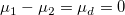であるかどうかを検定します)。そして、仮説は次の形式をとります。
に等しいかどうかを検定します(例：2つの平均が等しいかどうかを検定するにはその差が0、つまり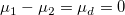であるかどうかを検定します)。そして、仮説は次の形式をとります。
2群の t検定はスチューデントのt統計量と関連する確率を計算し、2つの標本の平均の差がに等しいかどうかを検定します(例：2つの平均が等しいかどうかを検定するにはその差が0、つまり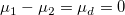であるかどうかを検定します)。そして、仮説は次の形式をとります。
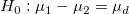 Vs 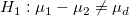 両側
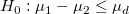 Vs 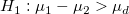 上側
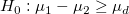 Vs /math-9a968e5033dd7110b7973529fa35c85d.png "H_1:\mu_1-\mu_2 < \mu_d") 下側
下側
標本サイズが/math-d60f5062564e1ece65993038b62484fa.png "x_1\,\!") と
と/math-9defdb27049cde0b5bdfd4e762a02d6b.png "x_2\,\!") 、平均が
、平均が/math-8d88a43872d6db6535d8672a15f09ce2.png "n_1\,\!") と
と/math-2f6fac59fce80e76d698bcf5ea77bab6.png "n_2\,\!") 、分散が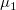と
、分散が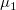と/math-917bb8defee48f460766703f23fc0822.png "\mu_2\,\!") である2つの独立した標本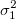と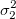が、2つの正規分布する母集団からそれぞれ得られたものだとすると、下記の式で表すことができます。
である2つの独立した標本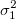と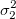が、2つの正規分布する母集団からそれぞれ得られたものだとすると、下記の式で表すことができます。
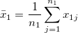, 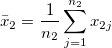, 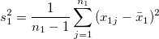, 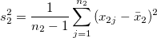
ここで、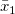と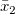は標本平均で、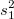と/math-8a65733320d52c6da4efeeb5888dba00.png "s_2^2\,\!") は標本分散です。そして、t 検定統計量を次の式で計算します。
は標本分散です。そして、t 検定統計量を次の式で計算します。
ここでは、等しい分散であると仮定され、それは/math-3728dc0e9ed8d4ea6c77089a7c1bb2fb.png "\sigma_1^2=\sigma_2^2\,\!") になります。
になります。
検定の統計量tは次のようになります。
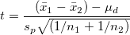
これは自由度 /math-6350a1d09d381cb5b9c2420a49cec064.png "(v = n_1+n_2-2)") を持つt 分布であり、
を持つt 分布であり、
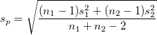
は、2つの標本のプール分散です。
等しい分散ではないと見なされる場合
通常の2標本の t統計量はt分布ではないので、近似した検定の統計量t'が使われます。
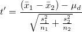
そして、自由度vを持つt分布が、t’の分布の近似に使われます。
/math-fdd079fbba82fc1bb066171f062bab57.png "v=\frac{(s_1^2/n_1+s_2^2/n_2)^2}{\frac{(s_1^2/n_1)^2}{n_1-1}+\frac{(s_2^2/n_2)^2}{n_2-1}}")
限界値を持つtの値を比較し、次の場合、帰無仮説/math-806277203dedea2ed8321f6cbd465a54.png "H_0\,\!") を棄却します。
を棄却します。
両側検定： 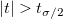;
上側検定： /math-b3c71dc9421063ffaf6de1641540a5d5.png "t > t_\sigma\,\!") ;
;
下側検定： 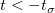;
p 値もユーザ指定の有意水準, /math-3ac6004d77c0cc0055e95c99b9dfd7e0.png "\sigma\,\!") と比較され、その値は通常0.05が使われます。帰無仮説は、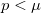の場合棄却されます。
と比較され、その値は通常0.05が使われます。帰無仮説は、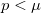の場合棄却されます。
上側と下側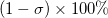の平均の相違に対する信頼水準/math-32a17f0051e09406b2f689fa5f0bb2c5.png "(\mu_1 - \mu_2)\,\!") は次のように計算されます。
は次のように計算されます。
等しい分散であると見なされる場合
| 帰無仮説 | 信頼区間 |
|---|---|
| 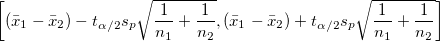 | |
| 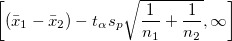 | |
| 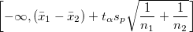 |
等しい分散ではないと見なされる場合
| 帰無仮説 | 信頼区間 |
|---|---|
| 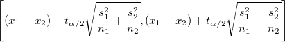 | |
| 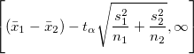 | |
| 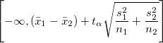 |
ここで、/math-f1004b741c7a8310ad2a3b7c0d726855.png "t_{\sigma/2}\,\!") は自由度vを持つt-分布の限界値です。
は自由度vを持つt-分布の限界値です。
2群の t検定の検出力は、その感度の測定です。検出力の計算に関する詳細なアルゴリズムについては、検出力とサンプルサイズヘルプをご覧下さい。
2群のt検定の計算は、NAG関数nag_2_sample_t_test (g07cac)を使っています。アルゴリズムについての詳細は、対応するNAG文書を参照して下さい。